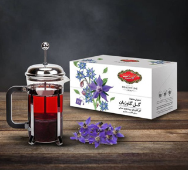
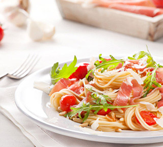

وبلاگ
خواص چای نوشیدنی جادویی برای سلامتی و آرامش
خواص چای نوشیدنی جادویی برای سلامتی و آرامش چای، این نوشیدنی کهن و محبوب، قرنهاست که در فرهنگهای مختلف جایگاه ویژهای دارد. از مراسم چایخوری

نحوه نگهداری از آجیل: راهنمای کامل برای حفظ تازگی و کیفیت
نحوه نگهداری از آجیل: راهنمای کامل برای حفظ تازگی و کیفیت آجیل یکی از مغذیترین و خوشمزهترین تنقلاتی است که میتوانید در رژیم غذایی خود
چرا برخی شیر به چای اضافه میکنند؟ شیرچای چیست؟
چرا برخی شیر به چای اضافه میکنند چرا شیرچای چیست؟ آشنایی با یک نوشیدنی محبوب جهانی شیرچای، نوشیدنی خوشمزه و آرامشبخشی است که ترکیبی از
چای صبحانه انتخاب خوبی برای آغاز روز
فواید مصرف چای سیاه در صبحانه چای سیاه یکی از محبوبترین نوشیدنیها در سراسر جهان است که اغلب بهعنوان بخشی از صبحانه مصرف میشود. این
فواید دمنوش بابونه: درمانی طبیعی برای بدن و ذهن
فواید دمنوش بابونه درمانی طبیعی برای ذهن و بدن دمنوش بابونه یکی از محبوبترین نوشیدنیهای گیاهی است که از گلهای خشک بابونه تهیه میشود. این

فواید چای سیاه: نوشیدنیای برای سلامتی و آرامش
حبوبات: منبع پروتئین و انرژی چای، یکی از پرمصرفترین نوشیدنیهای جهان، علاوه بر طعم و عطر بینظیرش، فواید بسیاری برای سلامتی دارد. این نوشیدنی سنتی،
فواید پسته: گنج کوچک سلامتی بدن
فواید پسته این گنج کوچک و پر خاصیت آیا از فواید پسته می دانید؟ پسته، این دانه کوچک سبزرنگ، یکی از محبوبترین آجیلها در جهان
فواید برنج: انتخابی سالم و ضروری برای هر آشپزخانه
فواید برنج برای سلامتی: انتخاب سالم و ضروری هر آشپزخانه برنج سومین محصول در کشاورزی از نظر میزان کشت است. از فواید برنج چه می
فواید بادام زمینی، دانهای خوش طعم با دنیایی از خواص
بادام زمینی دانه مفیدی است که فواید فراوان دارد از جمله میزان پروتئین و دوپامین موجود در این دانه برای بدن مفید است.
طرز تهیه برنج زعفرانی
طرز تهیه پلو زعفرانی کته زعفرانی یکی از سادهترین و خوشعطرترین غذاهای ایرانی است که میتواند بهتنهایی یا بهعنوان پایهای برای انواع خورشها و کبابها

تفاوت بین چای و دمنوش
طرز تفاوت بین چای و دمنوش گیاهی چای و دمنوشهای گیاهی دو نوشیدنی محبوب و پرطرفدار هستند که هر کدام ویژگیها و کاربردهای خاص خود
رازهای شگفتانگیز در مورد طعم فلفل سیاه و سفید
رازهای شگفتانگیر در مورد طعم فلفل سیاه و سفید فلفل سیاه و سفید، دو نوع از محبوبترین ادویههای جهان، بهطور گسترده در آشپزی و درمانهای طبیعی

طرز تهیه شیرینی کرهای با عطر جوز هندی
حبوبات: منبع پروتئین و انرژی اگر به دنبال یک شیرینی ساده، خوشمزه و متفاوت هستید، شیرینی کرهای با عطر دلنشین جوز هندی گزینهای عالی است.
چطور زعفران تبدیل به گرانترین ادویه جهان شد
چگونه زعفران به گرانترین ادویه جهان تبدیل شد زعفران که به “طلای سرخ” مشهور است، گرانترین ادویه جهان بهشمار میرود. این ادویه ارزشمند نهتنها به
چگونه برنج قهوهای را به درستی بپزیم؟
چطور برنج قهوهای را به درستی بپزیم برنج قهوهای به دلیل حفظ سبوس و لایههای مغذی خود، نسبت به برنج سفید ارزش غذایی بالاتری دارد.

چرا چای ارل گری به این نام شناخته میشود؟
چای ارل گری چرا به این نام شناخته میشود چای ارل گری یکی از محبوبترین انواع چای در جهان است که به دلیل طعم منحصربهفرد
فواید و خواص دارچین: طعمی قدرتمند
فواید و خواص دارچین ادویه با طعم قوی دارچین یکی از پرکاربردترین ادویهها در آشپزی و طب سنتی است که علاوه بر عطر و طعم
اولین بار چه کسی دمنوش را کشف کرد؟
اولین بار چه کسی دمنوش را کشف کرد؟ دمنوشها، نوشیدنیهایی هستند که از دم کردن یا جوشاندن گیاهان، ادویهها و میوهها در آب داغ تهیه
انواع ادویه و مرینیت کردن گوشت برای کباب: راز طعمهای بینظیر
انواع ادویه و مرینیت کردن گوشت برای کباب: راز طعمهای بینظیر کباب یکی از محبوبترین غذاهای گوشتی در سراسر جهان است که با ادویهها و
سالاد بال مرغ لیمو فلفلی، شام سریع و سالم
طرز تهیه سالاد بال مرغ لیمو فلفلی، سریع و خوشمزه نویسنده: مهدیه فراهانی اگر عاشق طعم بال مرغ هستید اما میخواهید سبک غذایی سالمتر و سبکتر
راهنمای کامل روش پخت انواع حبوبات
راهنمای کامل روش پخت حبوبات مختلف حبوبات در هر آشپزخانهای جایگاه ویژهای دارند. این دانههای مغذی در وعدههای غذایی روزمره ما انسانها نقشی پررنگ دارند
تاریخچه برنج
تاریخچه برنج برنج ماده اصلی غذایی بیش از یک سوم جمعیت جهان است، در شرق آسیا و منطقه خاورمیانه نیز برنج یکی از پر اهمیتترین
زرشک راز سلامتی
زرشک، سرآغازی برای سلامت قلب و آرامش فواید زرشک که با نام علمی Berberis vulgaris شناخته میشود فراوان و برای سلامتی مفید است. در گذشته
تاریخچه برنج : روشهای تشخیص برنج مرغوب ایرانی
روشهای تشخیص برنج مرغوب ایران برنج، عضو جدایی ناپذیره سفره ما ایرانیهاست. تقریبا در جوامع خاورمیانه و خصوصا شرق آسیا برنج قوت غالب اکثر مردم
زعفران: انواع زعفران و ویژگی زعفران ایرانی
زعفران: انواع زعفران و ویژگی زعفران ایرانی زعفران از دیرباز نزد ایرانیان و سایر جهانیان از ادویههای محبوب و گرانبها محسوب میشده. زعفران به خاطر
خواص جوز هندی
از خواص جوز هندی چه میدانیدجادوی ادویهها در طعم دادن به انواع غذاها و نوشیدنیها کلید خوشمزه شدن آنها محسوب میشود. جوز هندی یکی از
خواص منحصربهفرد چای سبز
خواص منحصر به فرد چای سبز چای سبز به دلیل حضور مقدار زیاد آنتیاکسیدان قوی اپیگالوکاتچین گالات(EGCG)، میتواند در پیشگیری از برخی انواع سرطانها مانند

خواص منحصربهفرد چای سیاه
خواص منحصر به فرد چای سیاه چای سیاه که اغلب ما با نام چای میشناسیم دارای ویژگیها و فواید خاصی است که آن را از
تفاوت چای سیاه و سبز در چیست؟
تفاوت چای سیاه و سبز در چیست؟ چای سبز سالم تر است یا چای سیاه؟

طرز تهیه تاکو غذای مشهور مکزیکی
طرز تهیه تاکو مکزیکی یکی از غذاهای معروف مکزیکی تاکو است، تاکو شهرت جهانی دارد و در همه نقاط دنیا طرفداران فراوانی پیدا کرده است.
حبوبات منبع عالی پروتئین و انرژی
حبوبات: منبع پروتئین و انرژی حبوبات، یکی از پرمصرفترین مادههای غذایی در سر سفره ما ایرانیان است که به خاطر ارزش غذایی بسیار بالایشان جایگاه
رازهایی درباره فرآوری و تولید چای
تاریخچه تولید چای؛ رازهایی درباره فرآوری و تولید چای تولید چای از اینجا اهمیت دارد که چای، یکی از جداییناپذیرترین نوشیدنیهای برای مردم ایران محسوب
تاریخچه برنج قهوهای
تاریخچه تولید و مصرف برنج قهوهای در گذشته ایران و بسیاری از کشورهای جهان، برنج سفید را تنها نوع برنج موجود میدانستند. گذرزمان باعث شد

بهترین دمنوشهای آرامبخش
تاریخچه تولید چای؛ رازهایی درباره فرآوری و تولید چای فنجانی نوشیدنی گرم میتواند یک عصر زیبا و آرام را برایتان به ارمغان بیاورد. دمنوشهای آرامبخش
برگر عدس
اگر دوست دارید که یک برگر گیاهی و کاملاً سالم داشته باشید برگر عدس یک انتخاب مناسب برای شماست. عدس سرشار از پروتئین است و

باندنت کیک شکلاتی
باندنت کیک مانند سایر کیکها به روش عادی پخته میشود. اسم این کیک از ظرف باندنت گرفته شده است. در واقع مایع و مواد کیک
آش انار
برای تهیه این آش از شب قبل حبوبات را بخیسانید. در ادامه برنج، بلغور، لوبیا و عدس را بشورید و داخل یک قابلمه مناسب بریزید. در این مرحله چند لیوان آب به قابلمه…
رولت مرغ
پیاز و سیر را در کاسهی بزرگی رنده کنید. سپس مرغ چرخ شده، پودر سوخاری، تخم مرغ، زعفران دمکرده، نمک، فلفل سیاه، پودر پاپریکا و پودر گوجه را به آن اضافه کنید و …
کیک ردولوت
مواد لازم آرد سفید گلستان یک و نیم پیمانهشکر یک و نیم پیمانهتخم مرغ دو عددباتر میلک یک پیمانهروغن مایع حدود یک پیمانهبیکینگ پودر گلستان
استیک با سس قارچ
استیک را باید در تابه چدنی سرخ کرده و در هر نوبت یک استیک را در تابه قرار داد. قطعات گوشت را کمی می کوبیم. دو طرف هر قطعه را به نمک و فلفل آغشته می کنیم…

ماکارونی با سبزیجات
ابتدا ماکارانیها را در ظرفی به همراه آب، روغن مایع و نمک میریزیم تا کمی بپزد. در این حین پیازها را خرد کرده و روی روغن تفت میدهیم تا طلایی شود…
سوپ مکزیکی
گوشت بوقلمون را در یک ماهیتابه بزرگ ریخته، آب روی آن بریزید تا روی آن را بپوشاند و به مدت نیم ساعت آن را بپزید. گوشت را از مایع آن بیرون آورده…

سوپ مکزیکی
گوشت بوقلمون را در یک ماهیتابه بزرگ ریخته، آب روی آن بریزید تا روی آن را بپوشاند و به مدت نیم ساعت آن را بپزید. گوشت را از مایع آن بیرون آورده…
All Right Reserved Golestan Company 2022-2025
Design By: Golestan Studio
چای گلستان
چای ممتاز هندوستان
چای ممتاز ارل گری
چای سيلان عطری
چای ممتاز سيلان
چای صبحانه گلستان
تی بگ گلستان
تی بگ بلک لاين
تی بگ ارل گری
دمنوش نعناع
دمنوش بابونه
منوش چای سبز
ادويه گلستان
زعفران ممتاز خراسان
ادویه کاری
ادویه ماست و خیار
فلفل سياه خالص
زردچوبه ممتاز
حبوبات گلستان
لوبيا قرمز ممتاز
لوبيا چيتی گلستان
عدس كانادايی
نخود زودپز كرمانشاه
لوبيا سفيد گلستان
All Right Reserved Golestan Company 2022-2025
Design By: Golestan Studio